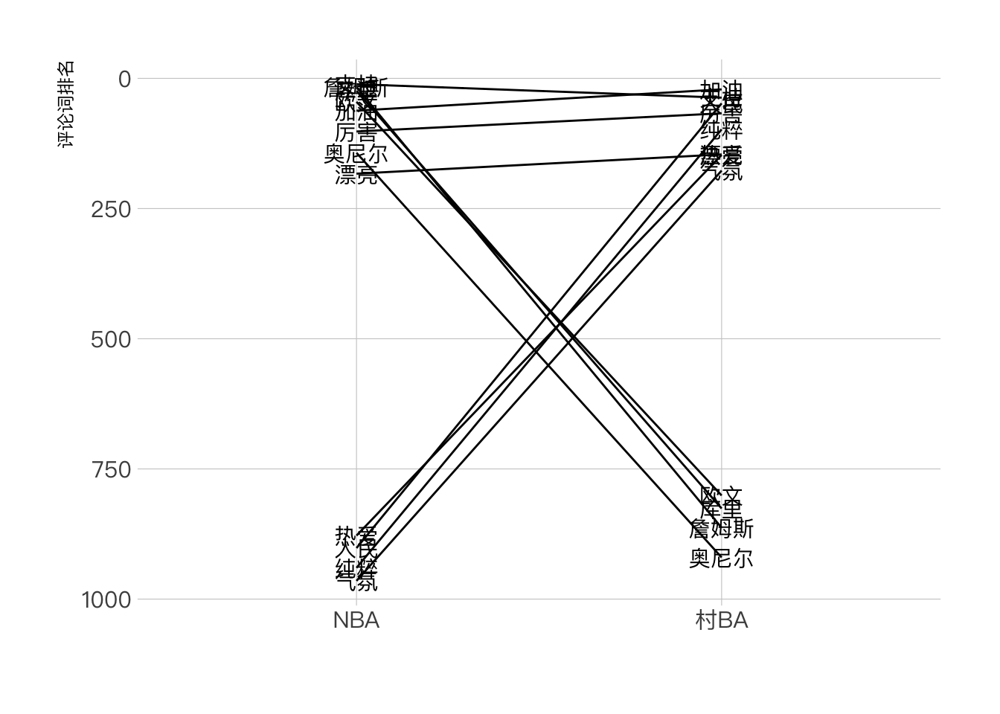
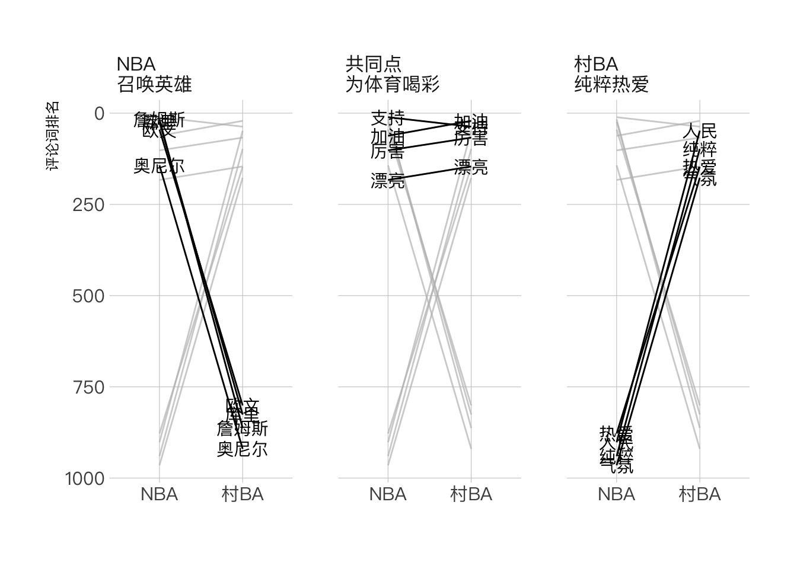
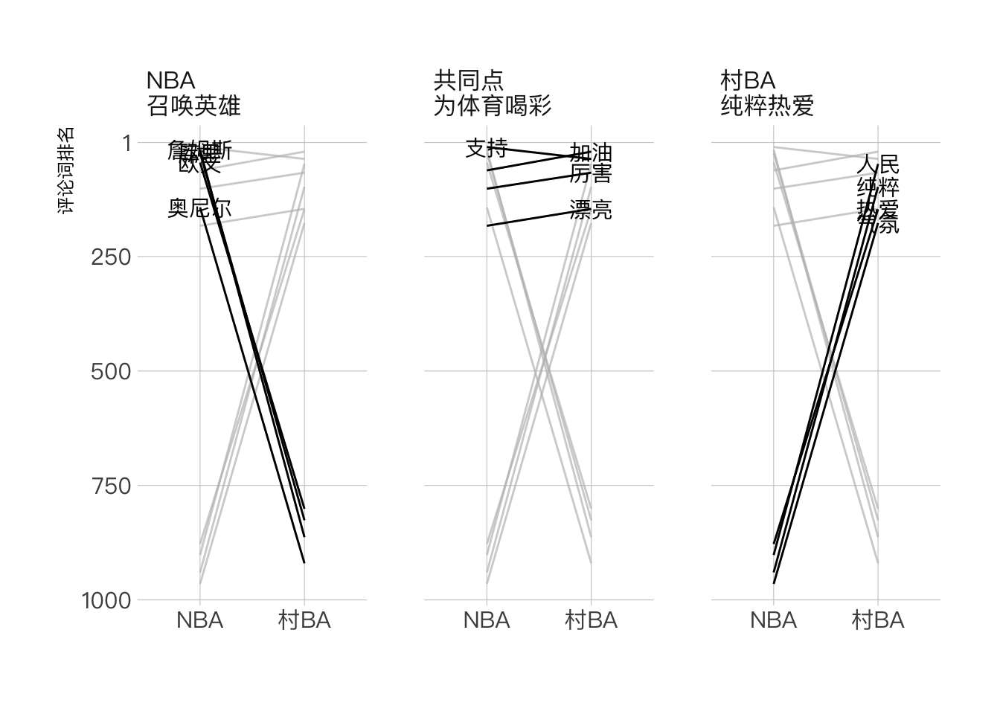

library(tidyverse)
library(hrbrthemes)
library(gghighlight)
library(readxl)背景
文本是社交媒体上最易获得的数据，但可视化形式却相对单一，基本上是词云一招鲜。
这背后其实更多是分析思路的问题，即不考虑其他维度（时间、关系、分类等），把所有文本一视同仁，简单粗暴地进行分词后做成词云。
而引入对比的视角，不仅可以打开分析思路，还能让文本数据的表现形式更加丰富。
举个例子，当我们想分析短视频平台上”村BA”比赛评论的特色时，可以引入对比，即比较”村BA”和 NBA 评论的区别，进而提炼出”村BA”运动的特色，这会比单独分析”村BA”会更加有趣。
包引入
数据引入和清洗
先从 NBA 和”村BA”相关短视频中各随机选取 50 万条评论，分词后筛选出词频最高的 1000 个词。
comments_word_top1000 <- read_xlsx("comments_word_top1000.xlsx")
knitr::kable(head(comments_word_top1000))| segword | NBA | 村BA | total |
|---|---|---|---|
| 赞 | 175390 | 222006 | 397396 |
| 玫瑰 | 159561 | 30730 | 190291 |
| 666 | 68798 | 29446 | 98244 |
| NA | 60378 | 22901 | 83279 |
| 爱心 | 64769 | 18192 | 82961 |
| 捂脸 | 29914 | 51536 | 81450 |
但这里不能直接使用词频进行对比，因为 NBA 和”村BA”两个数据集的词语数量不同，无法直接比较。因此我们改为使用排名，即单个词语在各自数据集中的排名。
clean_comments_word <- comments_word_top1000 %>%
mutate(NBA = rank(-NBA, ties.method = "min"),
村BA = rank(-村BA, ties.method = "min")) %>%
select(-total)knitr::kable(head(clean_comments_word))| segword | NBA | 村BA |
|---|---|---|
| 赞 | 1 | 1 |
| 玫瑰 | 2 | 4 |
| 666 | 3 | 5 |
| NA | 5 | 8 |
| 爱心 | 4 | 11 |
| 捂脸 | 7 | 2 |
这里使用了 rank 函数返回排名。其中 ties.method 参数表示当两个数值大小一致时采取的计算方法，默认返回均值。
knitr::kable(
tibble(
origin = rank(c(1,2,3,3,4)),
min = rank(c(1,2,3,3,4), ties.method = "min"),
max = rank(c(1,2,3,3,4), ties.method = "max"))
)| origin | min | max |
|---|---|---|
| 1.0 | 1 | 1 |
| 2.0 | 2 | 2 |
| 3.5 | 3 | 4 |
| 3.5 | 3 | 4 |
| 5.0 | 5 | 5 |
接下来，我们肉眼筛选出能够表达 NBA 和”村BA”各自特色的评论词语，以及能够表达两类比赛共同点的评论词语。
selected_word <- c("詹姆斯", "库里", "欧文", "奥尼尔","人民","接地气","纯粹", "热爱", "气氛", "厉害", "漂亮", "加油", "支持")可视化制图
为了对比这些词语在两个数据集中的排位差距，可以采用类折线图的可视化形式。
clean_comments_word %>%
filter(segword %in% selected_word) %>%
pivot_longer(cols = c("NBA", "村BA"), names_to = "type", values_to = "n") %>%
ggplot(aes(x = type, y = n)) +
geom_line(aes(group = segword)) +
geom_text(aes(label = segword), family = "PingFang SC") +
labs(x = "", y = "评论词排名") +
scale_y_reverse() + # 翻转纵坐标轴，排名高的放在上面比较合理
hrbrthemes::theme_ipsum(base_family = "PingFang SC", grid = "XY")
如前所述（也可从图中直观看见），我们可以将这些词语大致分为三类。接着，我们根据词语在两个数据集中的排名差距（以300为界）分成三类，再通过分面的可视化形式展示各自的特点。
clean_comments_word %>%
filter(segword %in% selected_word) %>%
mutate(facet = case_when(
NBA - 村BA >= 300 ~ "村BA\n纯粹热爱",
NBA - 村BA <= -300 ~ "NBA\n召唤英雄",
.default = "共同点\n为体育喝彩"
)) %>%
pivot_longer(cols = c("NBA", "村BA"), names_to = "type", values_to = "n") %>%
ggplot(aes(x = type, y = n)) +
geom_line(aes(group = segword)) +
gghighlight(use_direct_label = FALSE) +
geom_text(aes(label = segword), family = "PingFang SC") +
labs(x = "", y = "评论词排名") +
scale_y_reverse() + # 翻转纵坐标轴，排名高的放在上面比较合理
facet_wrap(~facet) +
hrbrthemes::theme_ipsum(base_family = "PingFang SC", grid = "XY")
到这里，图表雏形已经出来了。但还有两个地方可以改进，一是词语的文本会在左右两轴同时出现，太过冗余，现在想要让词语在哪个数据集中排位高，就出现在哪边；二是起始坐标轴应该为 1 而不是 0。
clean_comments_word %>%
filter(segword %in% selected_word) %>%
mutate(facet = case_when(
NBA - 村BA >= 300 ~ "村BA\n纯粹热爱",
NBA - 村BA <= -300 ~ "NBA\n召唤英雄",
.default = '共同点\n为体育喝彩'
)) %>%
# 设置过滤，返回排名高的数据集名称
mutate(text_filter = ifelse(NBA >= 村BA, "村BA", "NBA")) %>%
pivot_longer(cols = c("NBA", "村BA"), names_to = "type", values_to = "n") %>%
ggplot(aes(x = type, y = n)) +
geom_line(aes(group = segword)) +
gghighlight(use_direct_label = FALSE) +
# 利用之前设置的过滤条件
geom_text(data = . %>% filter(type == text_filter),
aes(label = segword), family = "PingFang SC") +
labs(x = "", y = "评论词排名") +
# 手动设置纵坐标轴
scale_y_reverse(breaks = c(1,250, 500, 750, 1000), labels = c(1,250, 500, 750, 1000)) +
facet_wrap(~facet) +
hrbrthemes::theme_ipsum(base_family = "PingFang SC", grid = "XY")
到此大功告成，如果有需要，还可在设计软件中进一步调整。